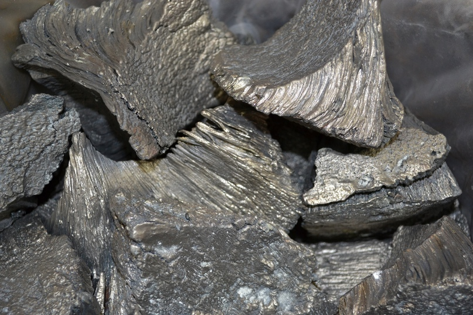

Самарий
Сама́рий (химический символ — Sm, от лат. Samarium) — химический элемент 3-й группы (по устаревшей классификации — побочной подгруппы третьей группы, IIIB) шестого периода периодической системы химических элементов Д. И. Менделеева с атомным номером 62.Относится к семейству лантаноидов.Простое вещество самарий — твёрдый редкоземельный металл серебристого цвета.

Для получения самария концентрат, содержащий РЗЭ, разделяют экстракцией или ионообменным методом. Из растворов осаждают карбонат или оксалат самария, которые затем прокаливают до Sm2O3. Металлический самарий получают восстановлением Sm2O3 лантаном или мишметаллом в вакууме при 1600 °C. Металлический самарий используют для изготовления постоянных магнитов на основе SmCo5 и SmCo17. Самарий и его соединения применяют в производстве люминофоров, синтетических гранатов, специальных стёкол, керамических материалов, пигментов и др.
Несмотря на статус редкоземельного, по распространённости в земной коре он занимает 40-е место среди всех элементов (для сравнения: олово - на 46-м, ртуть - на 67-м). Однако он не образует месторождений, и присутствует в виде примесей.Общее мировое производство оксида Sm оценивается в 700 тонн в год, из которых на нашу страну приходится порядка 18 тонн. Львиная доля извлекается в Китае.